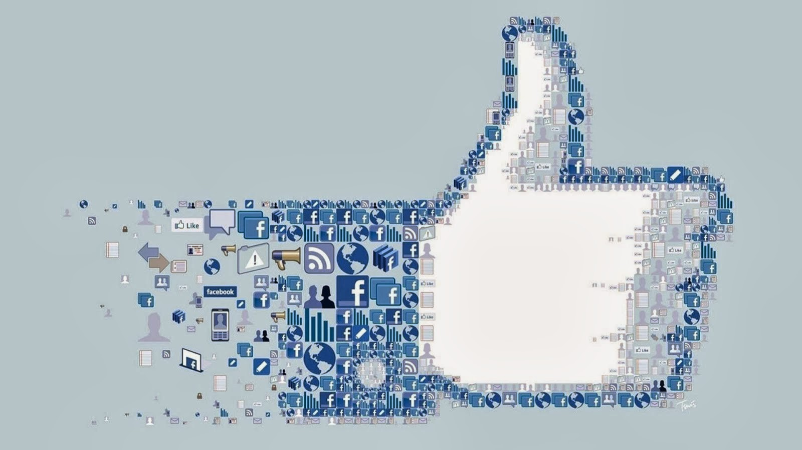
Like Button
Like Button Rating for Website
|
Sometimes you just want to let someone know that you like what they posted, but don't want to type a whole comment, so we made it as a kind of "one click comment". This is also why there's no need for an "unlike" button or a "this makes me hungry" button, etc -- you are still free to enter all of those other feelings into the comment box. People use FriendFeed to socialize and comment on the stuff they share from sites around the Web (like YouTube, Google Reader, or Last.fm), and a lot of our users said they wanted an ultra-quick way to share their appreciation for the most funny/interesting/useful entries from their friends. Now you can tell your friends which entries you like with a single. FRIENDFEED
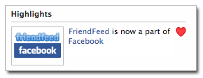
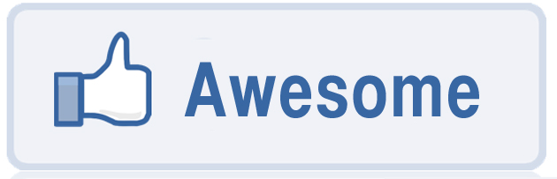
GOOGLE PLUS
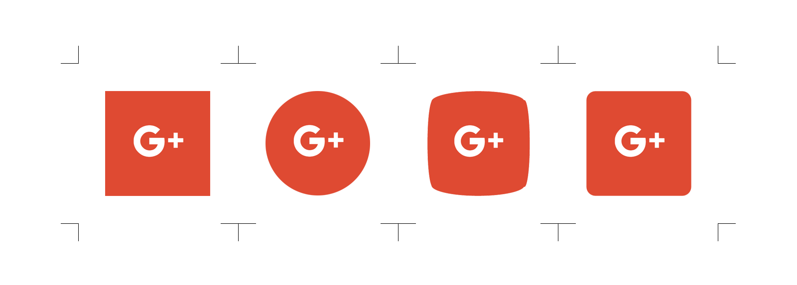
SINA WEIBO
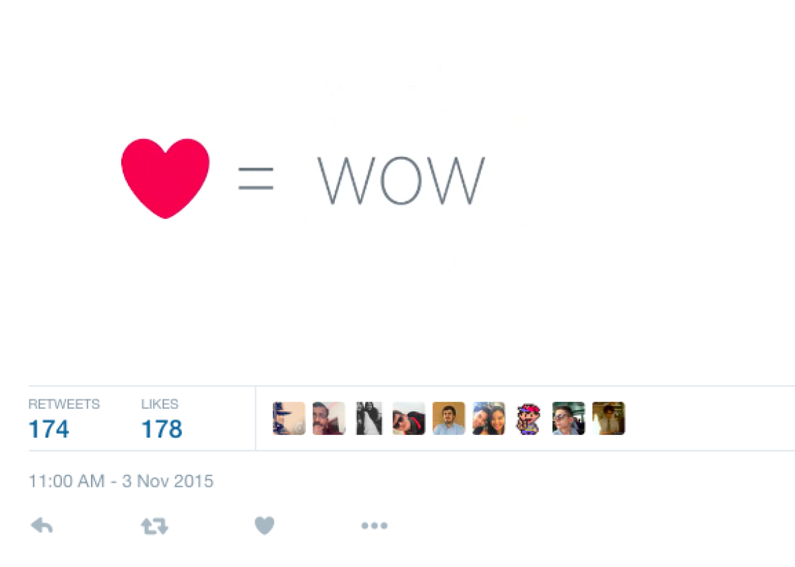
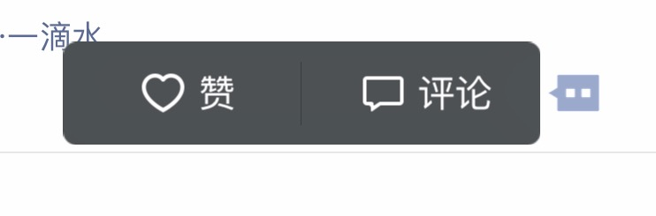
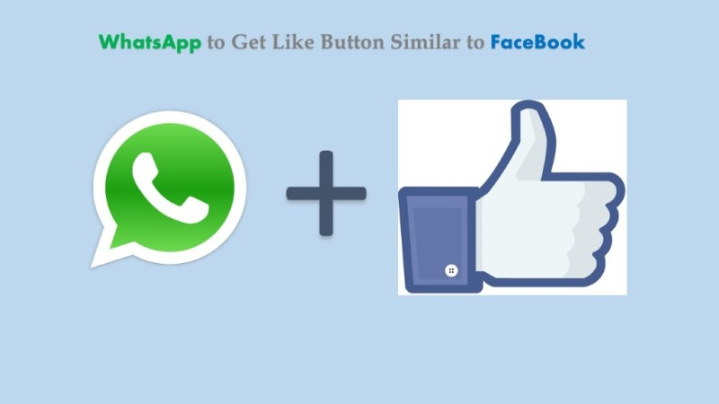
YOUTUBE
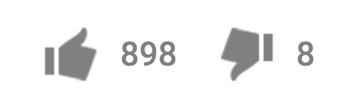
DISLIKE
TINDER
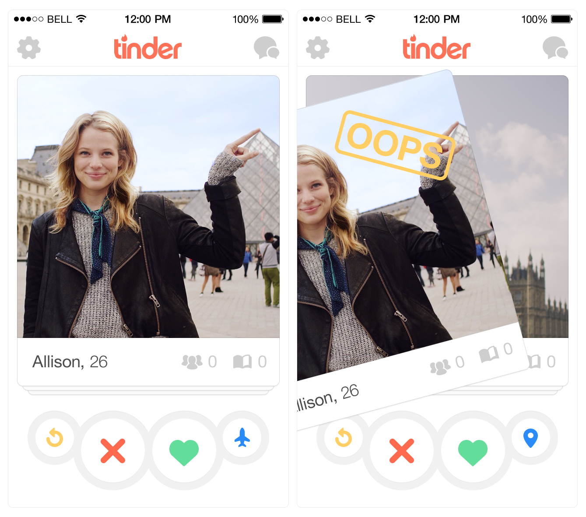
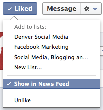
CONCLUSION
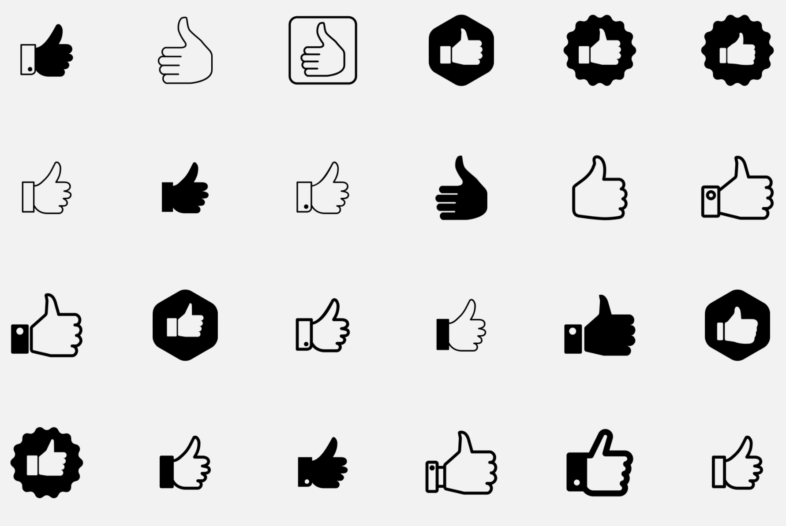
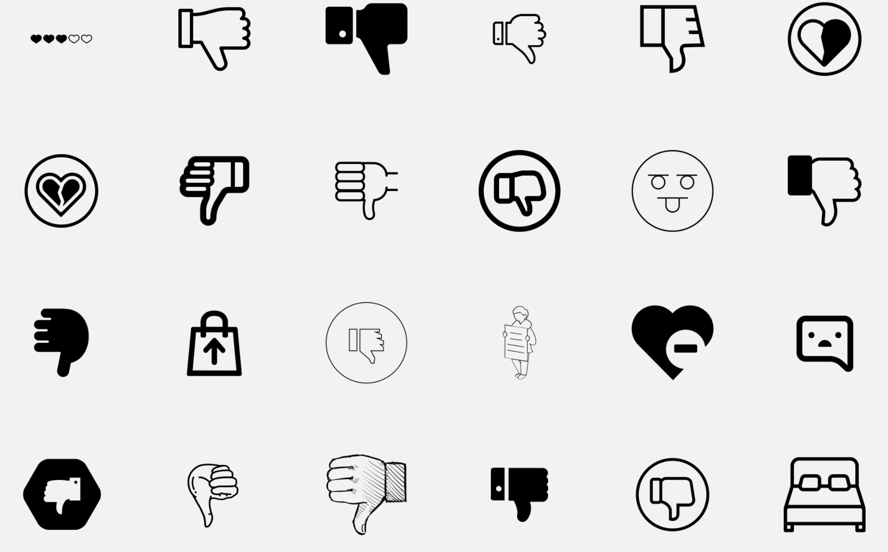
|